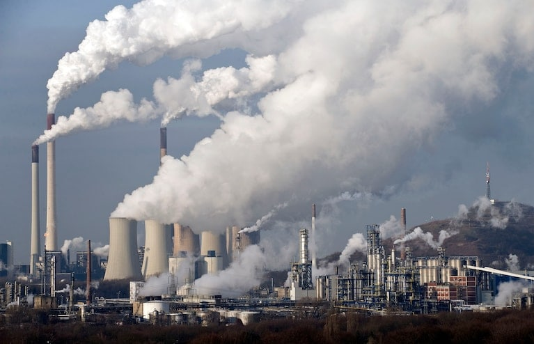
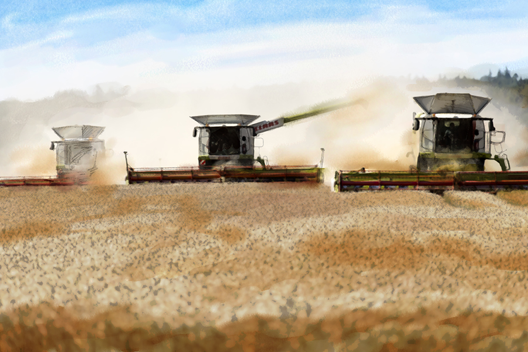
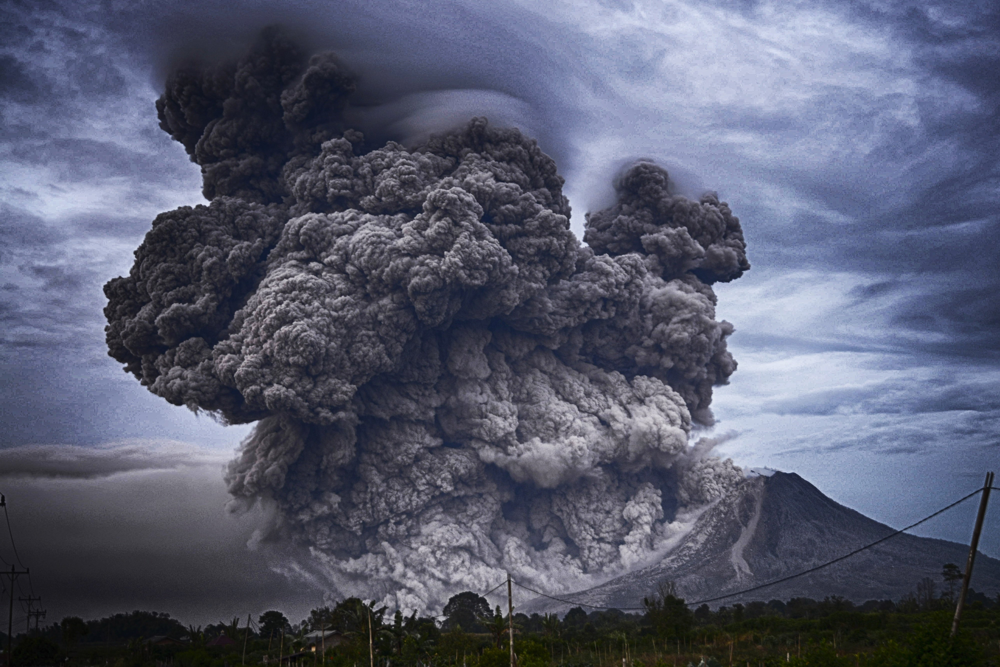

<!-- saved from url=(0028)http://127.0.0.1:8000/causes -->

  
  <meta name="viewport" content="width=device-width, initial-scale=1.0">
  <title>BSIT3B | GROUP2</title>

  <!-- Tailwind CSS -->
  <link href="./causes_files/tailwind.min.css" rel="stylesheet">

  <!-- Google Fonts -->
  <link href="./causes_files/css2" rel="stylesheet">

  <!-- AOS Animation Library -->
  <link href="./causes_files/aos.css" rel="stylesheet">
  <script src="./causes_files/aos.js.download"></script>

  <style>
    html { scroll-behavior: smooth; }
    body { 
      font-family: 'Poppins', sans-serif;
      color: #f0fdf4;
      background-color: #0f172a;
      overflow-x: hidden;
    }

    h1, h2, h3, h4 {
      font-family: 'Playfair Display', serif;
      letter-spacing: 0.5px;
    }

    /* Dropdown animation */
    .dropdown-hidden { 
      max-height: 0; 
      opacity: 0; 
      transform: translateY(-10px);
      overflow: hidden; 
      transition: max-height 0.3s ease, opacity 0.3s ease, transform 0.3s ease; 
    }
    .dropdown-visible { 
      max-height: 500px; 
      opacity: 1; 
      transform: translateY(0);
      transition: max-height 0.3s ease, opacity 0.3s ease, transform 0.3s ease; 
    }

    /* Nav link underline */
    .nav-link { 
      position: relative; 
      padding-bottom: 2px; 
      transition: color 0.2s; 
      letter-spacing: 0.3px;
    }
    .nav-link::after { 
      content: ''; 
      position: absolute; 
      left: 0; 
      bottom: 0; 
      width: 0%; 
      height: 2px; 
      background-color: #979e9aff; 
      transition: width 0.3s ease; 
    }
    .nav-link:hover::after { width: 100%; }

    /* Rotate arrow */
    .rotate-0 { transform: rotate(0deg); transition: transform 0.3s ease; }
    .rotate-180 { transform: rotate(180deg); transition: transform 0.3s ease; }

    /* Footer links hover */
    .footer-link { position: relative; padding-bottom: 2px; transition: color 0.2s; }
    .footer-link::after { content: ''; position: absolute; left: 0; bottom: 0; width: 0%; height: 2px; background-color: #22c55e; transition: width 0.3s ease; }
    .footer-link:hover::after { width: 100%; }
  </style>


  <!-- Navbar -->
  <header class="bg-gray-900 shadow-md">
    <div class="container mx-auto flex justify-between items-center py-4 px-6 relative">
      <h1 class="text-2xl font-bold text-green-400"></h1>
      <nav class="relative">
        <ul class="flex space-x-6 text-lg text-gray-300 items-center">
          <li><a href="index.html" class="nav-link">Home</a></li>

          <!-- Facts Dropdown -->
          <li class="relative">
            <button id="factsBtn" class="nav-link flex items-center focus:outline-none">
              Facts
              <svg id="factsArrow" class="ml-1 w-4 h-4 fill-current rotate-0 transition-transform" viewBox="0 0 20 20">
                <path d="M5.25 7.5l4.5 4.5 4.5-4.5H5.25z"></path>
              </svg>
            </button>
            <ul id="factsDropdown" class="absolute left-0 mt-2 w-44 bg-gray-900 rounded-md shadow-lg dropdown-hidden z-50">
              <li><a href="effects.html" class="block px-4 py-2 text-gray-300 nav-link">Effects</a></li>
              <li><a href="causes.html" class="block px-4 py-2 text-gray-300 nav-link">Causes</a></li>
              <li><a href="prevention.html" class="block px-4 py-2 text-gray-300 nav-link">Prevention</a></li>
            </ul>
          </li>

          <!-- More Dropdown -->
          <li class="relative">
            <button id="moreBtn" class="nav-link flex items-center focus:outline-none">
              More
              <svg id="moreArrow" class="ml-1 w-4 h-4 fill-current rotate-0 transition-transform" viewBox="0 0 20 20">
                <path d="M5.25 7.5l4.5 4.5 4.5-4.5H5.25z"></path>
              </svg>
            </button>
            <ul id="moreDropdown" class="absolute left-0 mt-2 w-44 bg-gray-900 rounded-md shadow-lg dropdown-hidden z-50">
              <li><a href="about.html" class="block px-4 py-2 text-gray-300 nav-link">About Us</a></li>
              <li><a href="game.html" class="block px-4 py-2 text-gray-300 nav-link">Game</a></li>
            </ul>
          </li>
        </ul>
      </nav>
    </div>
  </header>

  <!-- Home Hero Section -->
  
  <!-- 🔧 FIXED MAIN: full-width support -->
  <main class="min-h-screen">
    
<!-- HERO SECTION -->
<section id="causes" class="relative h-screen w-full bg-cover bg-center" style="background-image: url(&#39;https://cdn.prod.website-files.com/67857cc07ed4a73e28affa82/6806778623571cadedfcc3b2_Climate101.jpg&#39;)">
    
    <div class="absolute inset-0 bg-black bg-opacity-40 flex flex-col items-center justify-center text-center px-4">
        <h1 class="text-5xl md:text-6xl text-white font-bold mb-6 aos-init aos-animate" data-aos="fade-down">
            Causes of Climate Change
        </h1>
        <p class="text-lg md:text-xl text-gray-300 max-w-3xl aos-init aos-animate" data-aos="fade-up">
            Climate change is driven by both human and natural factors — from fossil fuels and deforestation to volcanic activity and ocean shifts.
        </p>
    </div>
</section>


<!-- MAIN SECTION -->
<section class="py-20 bg-transparent">
    <div class="max-w-7xl mx-auto px-6 space-y-24">

        <!-- =========================== -->
        <!-- 1. FOSSIL FUELS (IMAGE LEFT) -->
        <!-- =========================== -->
        <div class="grid md:grid-cols-2 gap-10 items-center">
            

            <div data-aos="fade-left" class="aos-init">
                <h2 class="text-3xl font-bold text-white mb-4">Fossil Fuels</h2>

                <p class="text-gray-300 leading-relaxed text-lg mb-4">
                    Burning fossil fuels such as coal, oil, and natural gas releases massive amounts of carbon dioxide (CO₂) into the atmosphere. These emissions trap heat, causing the planet’s temperature to rise at accelerating rates. Power plants, factories, and vehicles are the largest contributors, making fossil fuels the number one driver of modern climate change.
                </p>
                <p class="text-gray-300 leading-relaxed text-lg mb-4">
                    The energy demands of growing populations and expanding industries further increase fossil fuel consumption. Despite advances in renewable energy, many countries still rely heavily on coal and oil for electricity and transportation, deepening global dependence on high-emission fuels.
                </p>
                <p class="text-gray-300 leading-relaxed text-lg">
                    As CO₂ levels rise, the atmosphere becomes increasingly efficient at trapping heat, intensifying global warming. Reducing fossil fuel use is essential to slowing climate change and ensuring a sustainable future for the next generations.
                </p>
            </div>
        </div>


        <!-- ============================= -->
        <!-- 2. DEFORESTATION (IMAGE RIGHT) -->
        <!-- ============================= -->
        <div class="grid md:grid-cols-2 gap-10 items-center">

            <div class="order-2 md:order-1 aos-init" data-aos="fade-right">
                <h2 class="text-3xl font-bold text-white mb-4">Deforestation</h2>

                <p class="text-gray-300 leading-relaxed text-lg mb-4">
                    Forests act as Earth’s natural carbon sinks, absorbing CO₂ and releasing oxygen. When trees are cut down for agriculture, urban expansion, or logging, this crucial carbon storage is reduced. Less forest cover means more carbon remains in the atmosphere, directly intensifying global warming.
                </p>
                <p class="text-gray-300 leading-relaxed text-lg mb-4">
                    Deforestation also disrupts ecosystems and accelerates soil erosion, reducing biodiversity and weakening nature’s ability to regulate climate. Many species lose their habitats permanently, and entire food chains collapse when forest environments disappear or degrade.
                </p>
                <p class="text-gray-300 leading-relaxed text-lg">
                    In tropical regions such as the Amazon and Southeast Asia, forests are cleared at alarming rates. Protecting remaining forests and restoring damaged areas are essential steps in addressing climate change and safeguarding global ecological balance.
                </p>
            </div>

            
        </div>


        <!-- ==================================== -->
        <!-- 3. AGRICULTURE & INDUSTRY (LEFT IMAGE) -->
        <!-- ==================================== -->
        <div class="grid md:grid-cols-2 gap-10 items-center">
            

            <div data-aos="fade-left" class="aos-init">
                <h2 class="text-3xl font-bold text-white mb-4">Agriculture &amp; Industry</h2>

                <p class="text-gray-300 leading-relaxed text-lg mb-4">
                    Agriculture, particularly livestock farming, produces significant amounts of methane — a greenhouse gas far more potent than CO₂. Cattle, sheep, and goats release methane through digestion, while rice paddies and manure decomposition amplify emissions in farming regions worldwide.
                </p>
                <p class="text-gray-300 leading-relaxed text-lg mb-4">
                    Industrial processes contribute additional greenhouse gases such as nitrous oxide and industrial CO₂. Manufacturing, mining, cement production, and chemical industries require large amounts of energy and often emit pollutants that accelerate atmospheric warming.
                </p>
                <p class="text-gray-300 leading-relaxed text-lg">
                    As the global demand for food and industrial products increases, emissions continue to rise. Transforming agricultural methods and increasing industrial efficiency are crucial to reducing climate impacts and building a sustainable global economy.
                </p>
            </div>
        </div>


        <!-- =============================== -->
        <!-- 4. VOLCANIC ACTIVITY (RIGHT IMAGE) -->
        <!-- =============================== -->
        <div class="grid md:grid-cols-2 gap-10 items-center">

            <div class="order-2 md:order-1 aos-init" data-aos="fade-right">
                <h2 class="text-3xl font-bold text-white mb-4">Volcanic Activity</h2>

                <p class="text-gray-300 leading-relaxed text-lg mb-4">
                    Volcanic eruptions release ash, sulfur dioxide, and gases that can temporarily influence Earth’s climate. Large eruptions can cool the planet by blocking sunlight, while smaller ones may cause short-term warming through greenhouse gas emissions.
                </p>
                <p class="text-gray-300 leading-relaxed text-lg mb-4">
                    Although volcanoes contribute to natural climate fluctuations, their impact is minimal compared to human activities. Still, volcanic events can disrupt weather patterns, agriculture, and air travel for months or even years.
                </p>
                <p class="text-gray-300 leading-relaxed text-lg">
                    Despite being a natural phenomenon, volcanic emissions serve as reminders of how delicate and interconnected Earth’s climate system truly is.
                </p>
            </div>

            
        </div>


        <!-- =============================== -->
        <!-- 5. SOLAR VARIATIONS (LEFT IMAGE) -->
        <!-- =============================== -->
        <div class="grid md:grid-cols-2 gap-10 items-center">
            

            <div data-aos="fade-left" class="aos-init">
                <h2 class="text-3xl font-bold text-white mb-4">Solar Variations</h2>

                <p class="text-gray-300 leading-relaxed text-lg mb-4">
                    The Sun’s energy output naturally fluctuates over time. These solar cycles influence Earth’s climate by slightly altering the amount of radiation reaching the surface, which can cause mild warming or cooling phases.
                </p>
                <p class="text-gray-300 leading-relaxed text-lg mb-4">
                    While solar variations have shaped historical climate patterns, modern scientific evidence shows that their impact is small compared to human greenhouse gas emissions. Current warming trends far exceed what solar cycles alone can explain.
                </p>
                <p class="text-gray-300 leading-relaxed text-lg">
                    Understanding natural cycles helps scientists distinguish between natural climate shifts and human-driven global warming, reinforcing the urgency of reducing anthropogenic emissions.
                </p>
            </div>
        </div>


        <!-- =============================== -->
        <!-- 6. OCEAN CURRENTS (RIGHT IMAGE) -->
        <!-- =============================== -->
        <div class="grid md:grid-cols-2 gap-10 items-center">

            <div class="order-2 md:order-1 aos-init" data-aos="fade-right">
                <h2 class="text-3xl font-bold text-white mb-4">Ocean Currents</h2>

                <p class="text-gray-300 leading-relaxed text-lg mb-4">
                    Oceans move heat around the planet through major circulation systems. When these currents shift due to warming, melting ice, or changing wind patterns, global temperature distributions change dramatically.
                </p>
                <p class="text-gray-300 leading-relaxed text-lg mb-4">
                    Slowed or disrupted ocean currents can cause extreme weather shifts, such as colder winters in some regions and hotter, drier conditions in others. Marine life also suffers when warm and cold waters no longer mix properly.
                </p>
                <p class="text-gray-300 leading-relaxed text-lg">
                    These changes can accelerate climate impacts and disrupt both human communities and natural ecosystems, making ocean observations crucial for predicting future climate patterns.
                </p>
            </div>

            
        </div>

    </div>
</section>

  </main>

  
  <!-- Footer -->
  <footer class="bg-gray-950 text-center py-12 mt-12 text-gray-400">
    <p class="text-gray-400">© 2025 BSIT3B Group2 | Advocates Against Climate Change</p>
  </footer>

  <!-- Scripts -->
  <script>
    AOS.init({ duration: 1000, once: true });

    const dropdowns = [
      {btn: document.getElementById('factsBtn'), menu: document.getElementById('factsDropdown'), arrow: document.getElementById('factsArrow')},
      {btn: document.getElementById('moreBtn'), menu: document.getElementById('moreDropdown'), arrow: document.getElementById('moreArrow')}
    ];

    dropdowns.forEach(d => {
      d.btn.addEventListener('click', (e) => {
        e.stopPropagation();
        dropdowns.forEach(other => {
          if(other.menu !== d.menu) {
            other.menu.classList.remove('dropdown-visible');
            other.menu.classList.add('dropdown-hidden');
            other.arrow.classList.remove('rotate-180');
            other.arrow.classList.add('rotate-0');
          }
        });
        d.menu.classList.toggle('dropdown-visible');
        d.menu.classList.toggle('dropdown-hidden');
        d.arrow.classList.toggle('rotate-180');
        d.arrow.classList.toggle('rotate-0');
      });
    });

    window.addEventListener('click', () => {
      dropdowns.forEach(d => {
        d.menu.classList.remove('dropdown-visible');
        d.menu.classList.add('dropdown-hidden');
        d.arrow.classList.remove('rotate-180');
        d.arrow.classList.add('rotate-0');
      });
    });
  </script>


</body></html>